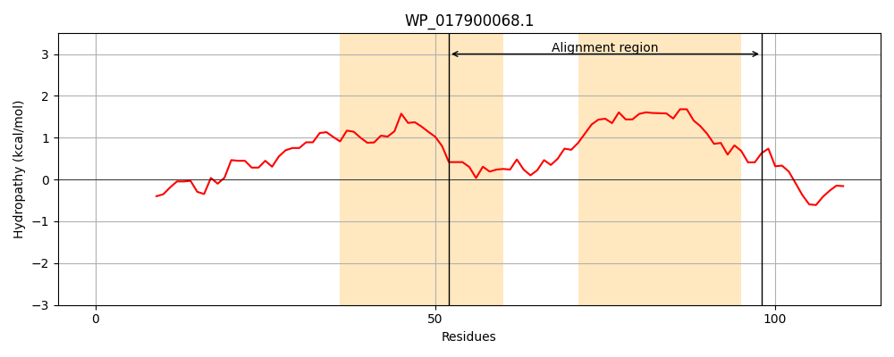
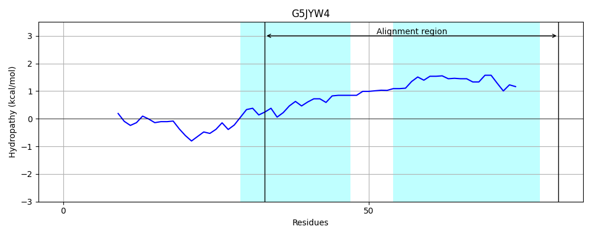
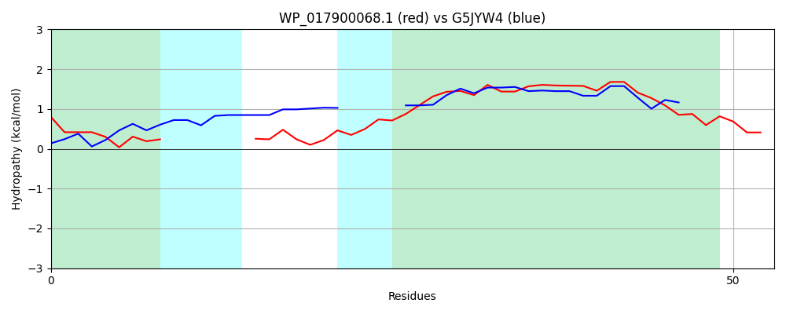

Hit Accession: G5JYW4
Hit TCID: 1.C.53.1.3
Hit Description: gnl|BL_ORD_ID|4784 gnl|TC-DB|G5JYW4|1.C.53.1.3 Uncharacterized protein OS=Streptococcus macacae NCTC 11558 GN=STRMA_0380 PE=4 SV=1
Mach Len: 53
e:0.000063
Query TMS Count : 2
Hit TMS Count: 2
TMS-Overlap Score: 1.800000
Predicted Substrates:None
BLAST Alignment:
| Protein Hydropathy Plots: | |
|---|---|
|  |  |
Pairwise Alignment-Hydropathy Plot: | |
|  | |